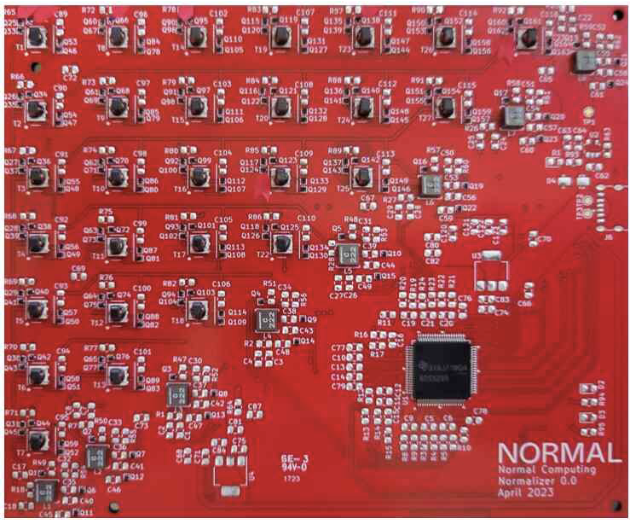
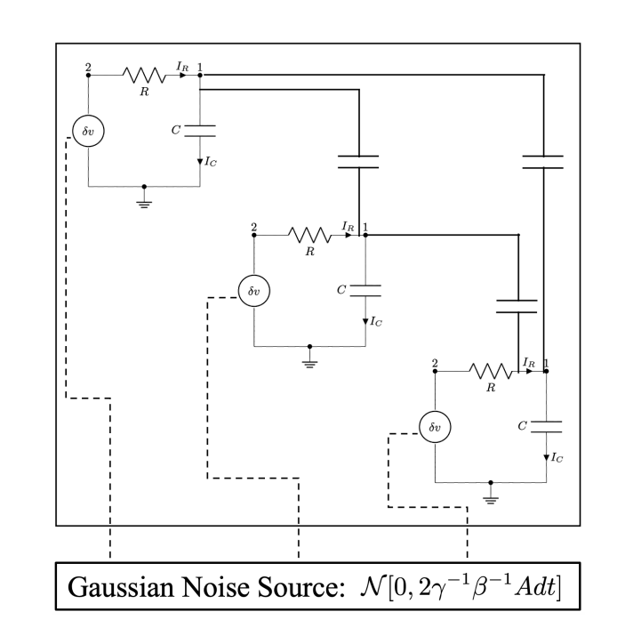
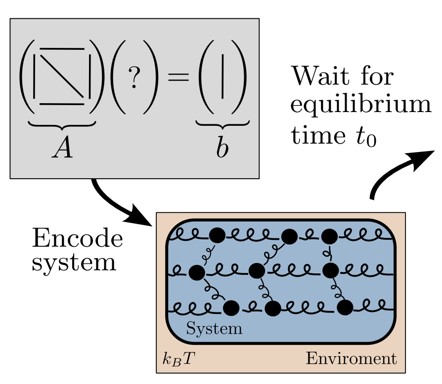
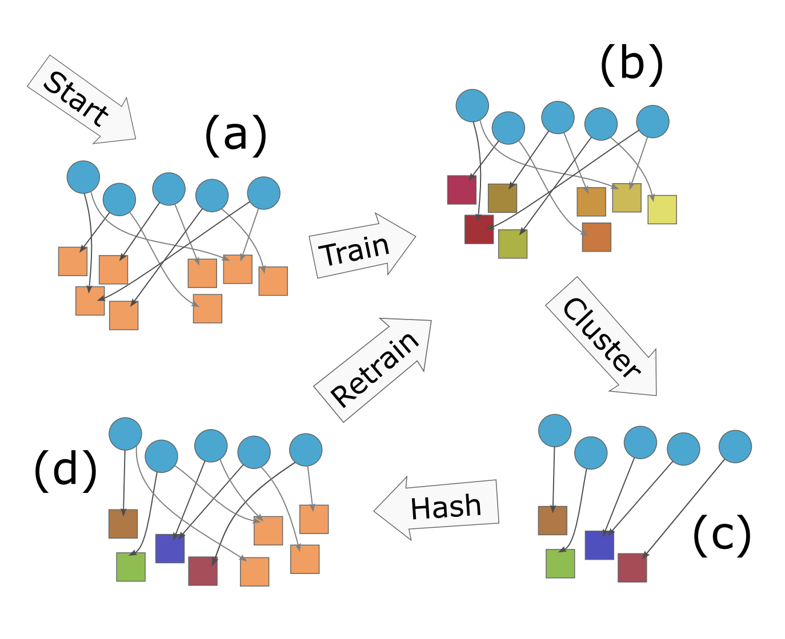
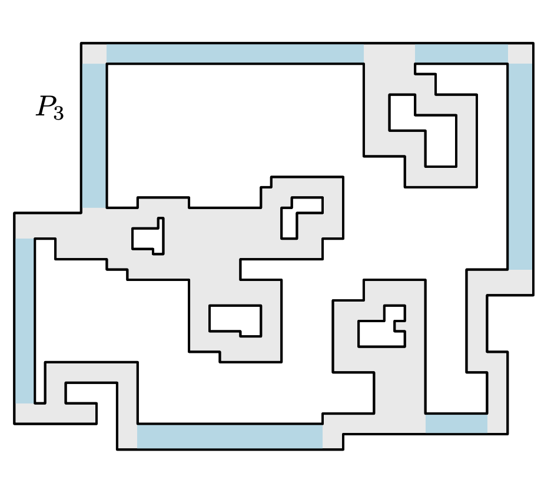
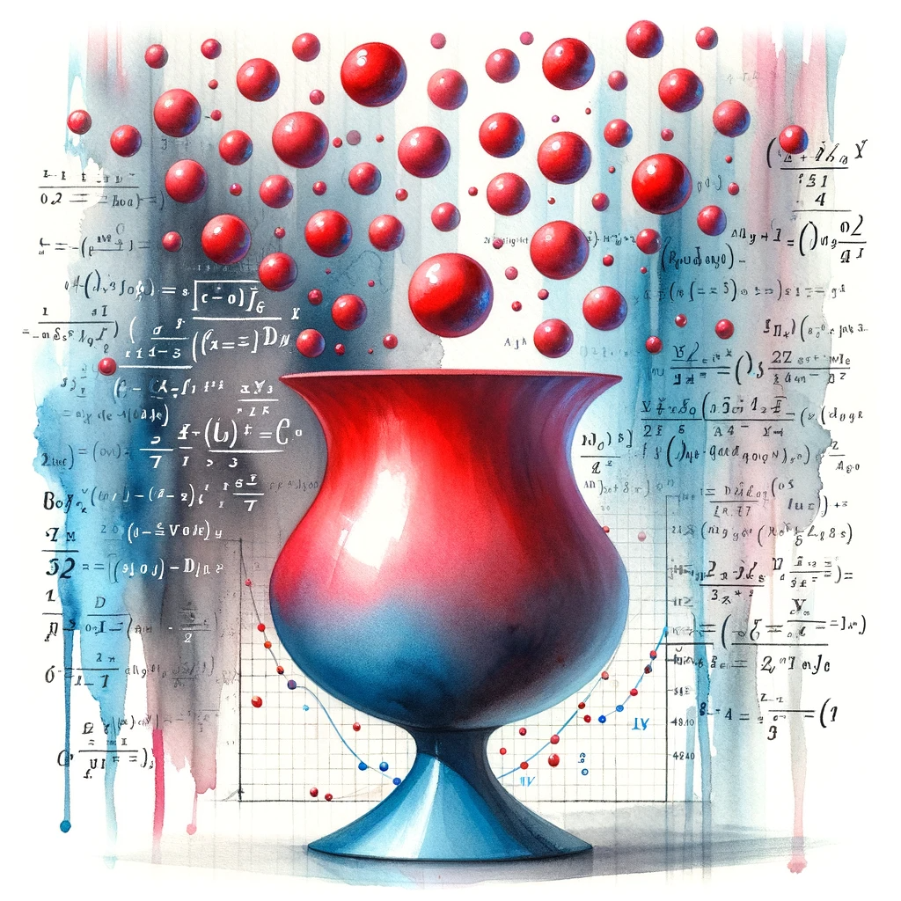
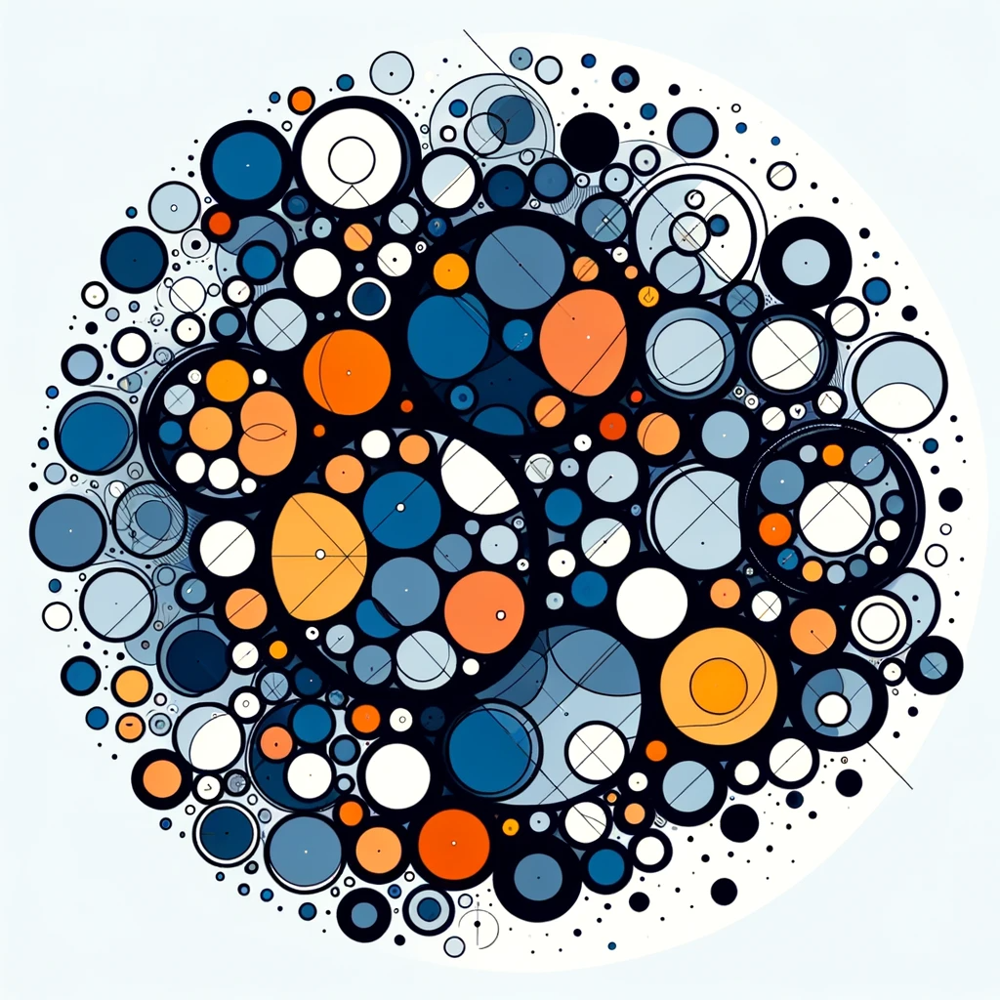
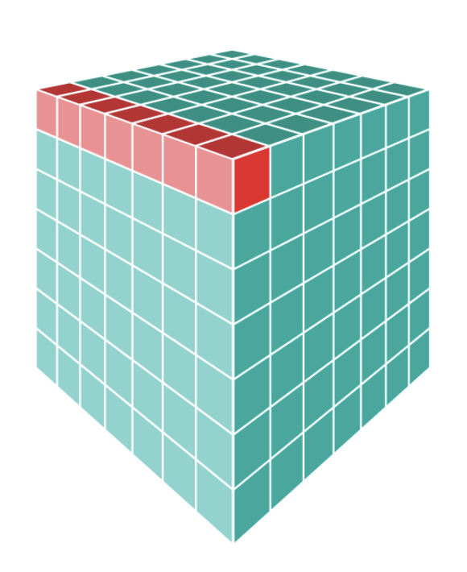
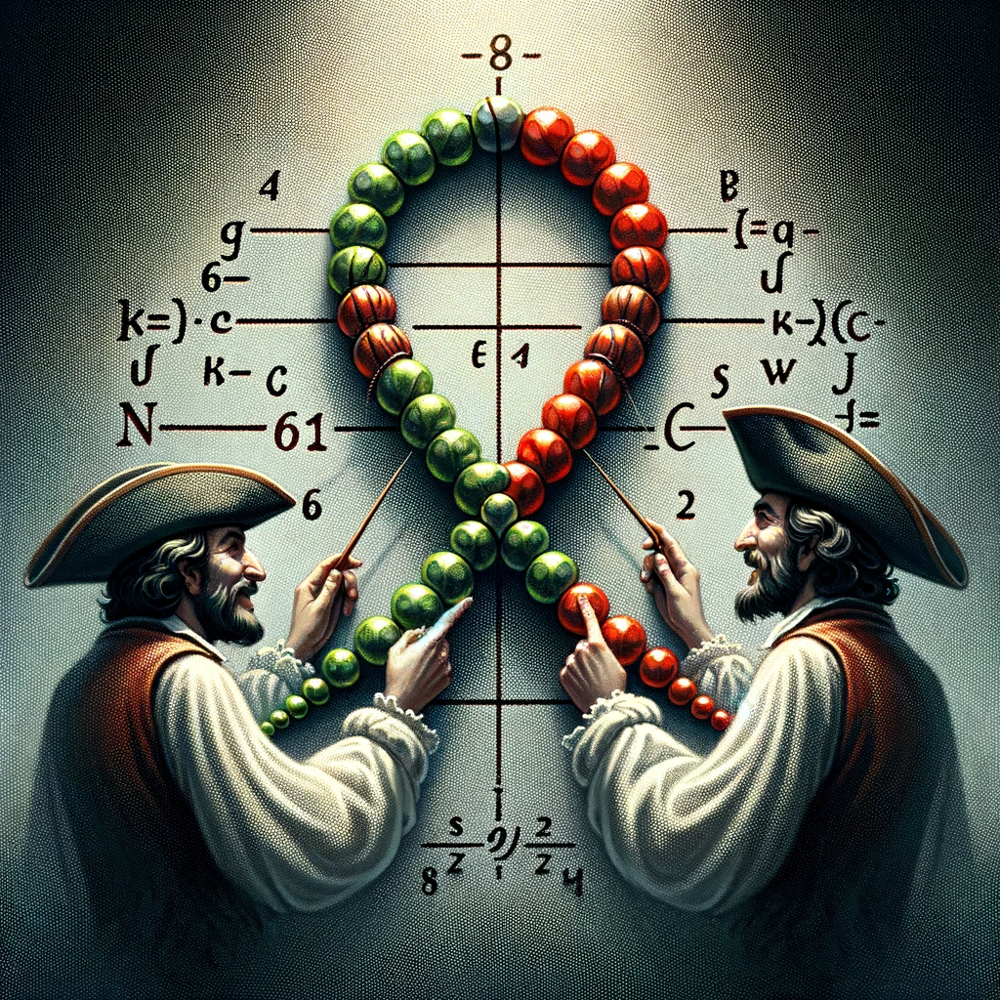
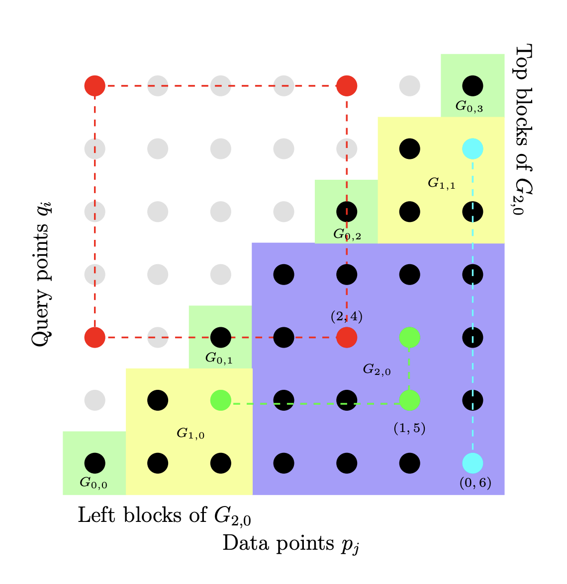

Publications
13 publications, newest first. Click a card to read its abstract.
-

Recent breakthroughs in artificial intelligence (AI) algorithms have highlighted the need for novel computing hardware in order to truly unlock the potential for AI. Physics-based hardware, such as thermodynamic computing, has the potential to provide a fast, low-power means to accelerate AI primitives, especially generative AI and probabilistic AI. In this work, we present a small-scale thermodynamic computer, which we call the stochastic processing unit. This device is composed of RLC circuits, as unit cells, on a printed circuit board, with 8 unit cells that are all-to-all coupled via switched capacitances. It can be used for either sampling or linear algebra primitives, and we demonstrate Gaussian sampling and matrix inversion on our hardware. The latter represents the first thermodynamic linear algebra experiment. We envision that this hardware, when scaled up in size, will have significant impact on accelerating various probabilistic AI applications. -

Thermodynamic computing exploits fluctuations and dissipation in physical systems to efficiently solve various mathematical problems. For example, it was recently shown that certain linear algebra problems can be solved thermodynamically, leading to an asymptotic speedup scaling with the matrix dimension. The origin of this "thermodynamic advantage" has not yet been fully explained, and it is not clear what other problems might benefit from it. Here we provide a new thermodynamic algorithm for exponentiating a real matrix, with applications in simulating linear dynamical systems. We describe a simple electrical circuit involving coupled oscillators, whose thermal equilibration can implement our algorithm. We also show that this algorithm also provides an asymptotic speedup that is linear in the dimension. Finally, we introduce the concept of thermodynamic parallelism to explain this speedup, stating that thermodynamic noise provides a resource leading to effective parallelization of computations, and we hypothesize this as a mechanism to explain thermodynamic advantage more generally.
-

Linear algebraic primitives are at the core of many modern algorithms in engineering, science, and machine learning. Hence, accelerating these primitives with novel computing hardware would have tremendous economic impact. Quantum computing has been proposed for this purpose, although the resource requirements are far beyond current technological capabilities, so this approach remains long-term in timescale. Here we consider an alternative physics-based computing paradigm based on classical thermodynamics, to provide a near-term approach to accelerating linear algebra.
At first sight, thermodynamics and linear algebra seem to be unrelated fields. In this work, we connect solving linear algebra problems to sampling from the thermodynamic equilibrium distribution of a system of coupled harmonic oscillators. We present simple thermodynamic algorithms for (1) solving linear systems of equations, (2) computing matrix inverses, (3) computing matrix determinants, and (4) solving Lyapunov equations. Under reasonable assumptions, we rigorously establish asymptotic speedups for our algorithms, relative to digital methods, that scale linearly in matrix dimension. Our algorithms exploit thermodynamic principles like ergodicity, entropy, and equilibration, highlighting the deep connection between these two seemingly distinct fields, and opening up algebraic applications for thermodynamic computing hardware.
-
[arxiv] [github] [pdf] [poster] [website] NEURIPS 2023 Clustering the Sketch: Dynamic Compression for Embedding Tables

Embedding tables are used by machine learning systems to work with categorical features. These tables can become exceedingly large in modern recommendation systems, necessitating the development of new methods for fitting them in memory, even during training.
The best previous methods for table compression are so called "post training" quantization schemes such as "product" and "residual" quantization. These methods replace table rows with references to k-means clustered "codewords". Unfortunately, clustering requires prior knowledge of the table to be compressed, which limits the memory savings to inference time and not training time. Hence, recent work, like the QR method, has used random references (linear sketching), which can be computed with hash functions before training. Unfortunately, the compression achieved is inferior to that achieved by post-training quantization.
The new algorithm, CQR, shows how to get the best of two worlds by combining clustering and sketching: First IDs are randomly assigned to a codebook and codewords are trained (end to end) for an epoch. Next, we expand the codebook and apply clustering to reduce the size again. Finally, we add new random references and continue training.
We show experimentally close to those of post-training quantization with the training time memory reductions of sketch-based methods, and we prove that our method always converges to the optimal embedding table for least-squares training.
-
[arxiv] [journal] [pdf] [slides] SOCG 2022 — Journal version in ACM Transactions on Algorithms Tiling with Squares and Packing Dominos in Polynomial Time

We consider planar tiling and packing problems with polyomino pieces and a polyomino container P. A polyomino is a polygonal region with axis parallel edges and corners of integral coordinates, which may have holes. We give two polynomial time algorithms, one for deciding if P can be tiled with 2×2 squares (that is, deciding if P is the union of a set of non-overlapping copies of the 2×2 square) and one for packing P with a maximum number of non-overlapping and axis-parallel 2×1 dominos, allowing rotations of 90∘. As packing is more general than tiling, the latter algorithm can also be used to decide if P can be tiled by 2×1 dominos.
These are classical problems with important applications in VLSI design, and the related problem of finding a maximum packing of 2×2 squares is known to be NP-Hard [J.~Algorithms 1990]. For our three problems there are known pseudo-polynomial time algorithms, that is, algorithms with running times polynomial in the area of P. However, the standard, compact way to represent a polygon is by listing the coordinates of the corners in binary. We use this representation, and thus present the first polynomial time algorithms for the problems. Concretely, we give a simple O(nlogn) algorithm for tiling with squares, and a more involved O(n4) algorithm for packing and tiling with dominos.
-
[arxiv] [journal] [pdf] STAT. PROB. LETT. 2022 Sharp and Simple Bounds for the raw Moments of the Binomial and Poisson Distributions

We prove the inequality E(X/μ)ᵏ ≤ [(k/μ)/log(k/μ+1)]ᵏ ≤ exp[k²/(2μ)] for sub−poissonian random variables, such as Binomially or Poisson distributed random variables with mean μ.
This improves over previous uniform bounds for the raw moments of those distributions by a factor exponential in k.
-
Tensor Core Units (TCUs) are hardware accelerators developed for deep neural networks, which efficiently support the multiplication of two dense √m × √m matrices, where m is agiven hardware parameter. In this paper, we show that TCUs can speed up similarity searchproblems as well. We propose algorithms for the Johnson-Lindenstrauss dimensionality reduction and for similarity join that, by leveraging TCUs, achieve a √m speedup up with respect to traditional approaches.
-
A Locality-Sensitive Hash (LSH) function is called (r,cr,p1,p1)-sensitive, if two data-points with a distance less than r collide with probability at least p1 while data points with a distance greater than cr collide with probability at most p2. These functions form the basis of the successful Indyk-Motwani algorithm (STOC 1998) for nearest neighbour problems. In particular one may build a c-approximate nearest neighbour data structure with query time O(nρ/p₁) where ρ = (log 1/p1)/(log 1/p2) ∈ (0,1). That is, sub-linear time, as long as p1 is not too small. This is significant since most high dimensional nearest neighbour problems suffer from the curse of dimensionality, and can't be solved exact, faster than a brute force linear-time scan of the database.
Unfortunately, the best LSH functions tend to have very low collision probabilities, p1 and p2. Including the best functions for Cosine and Jaccard Similarity. This means that the nρ/p1 query time of LSH is often not sub-linear after all, even for approximate nearest neighbours!
In this paper, we improve the general Indyk-Motwani algorithm to reduce the query time of LSH to O(nρ/p11-ρ) (and the space usage correspondingly.) Since nρ/p11-ρ < n ⇔ p1 > 1/n, our algorithm always obtains sublinear query time, for all collision probabilities at least 1/n. For p1 and p2 small enough, our improvement over all previous methods can be up to a factor n in both query time and space.
The improvement comes from a simple change to the Indyk-Motwani algorithm, which can easily be implemented in existing software packages.
-
[arxiv] [blog post] [pdf] [slides] [video] FOCS 2020 Subsets and Supermajorities: Optimal Hashing‑based Set Similarity Search

We formulate and optimally solve a new generalized Set Similarity Search problem, which assumes the size of the database and query sets are known in advance. By creating polylog copies of our data-structure, we optimally solve any symmetric Approximate Set Similarity Search problem, including approximate versions of Subset Search, Maximum Inner Product Search (MIPS), Jaccard Similarity Search and Partial Match.
Our algorithm can be seen as a natural generalization of previous work on Set as well as Euclidean Similarity Search, but conceptually it differs by optimally exploiting the information present in the sets as well as their complements, and doing so asymmetrically between queries and stored sets. Doing so we improve upon the best previous work: MinHash [J. Discrete Algorithms 1998], SimHash [STOC 2002], Spherical LSF [SODA 2016, 2017] and Chosen Path [STOC 2017] by as much as a factor n.14 in both time and space; or in the near-constant time regime, in space, by an arbitrarily large polynomial factor.
Turning the geometric concept, based on Boolean supermajority functions, into a practical algorithm requires ideas from branching random walks on Z2, for which we give the first non-asymptotic near tight analysis.
Our lower bounds follow from new hypercontractive arguments, which can be seen as characterizing the exact family of similarity search problems for which supermajorities are optimal. The optimality holds for among all hashing based data structures in the random setting, and by reductions, for 1 cell and 2 cell probe data structures. As a side effect, we obtain new hypercontractive bounds on the directed noise operator.
-
[arxiv] [pdf] [slides] [slides 2] SODA 2020 — Merged from "Almost Optimal Tensor Sketch" Oblivious Sketching of High‑Degree Polynomial Kernels

Kernel methods are fundamental tools in machine learning that allow detection of non-linear dependencies between data without explicitly constructing feature vectors in high dimensional spaces. A major disadvantage of kernel methods is their poor scalability: primitives such as kernel PCA or kernel ridge regression generally take prohibitively large quadratic space and (at least) quadratic time, as kernel matrices are usually dense. Some methods for speeding up kernel linear algebra are known, but they all invariably take time exponential in either the dimension of the input point set (e.g., fast multipole methods suffer from the curse of dimensionality) or in the degree of the kernel function.
Oblivious sketching has emerged as a powerful approach to speeding up numerical linear algebra over the past decade, but our understanding of oblivious sketching solutions for kernel matrices has remained quite limited, suffering from the aforementioned exponential dependence on input parameters. Our main contribution is a general method for applying sketching solutions developed in numerical linear algebra over the past decade to a tensoring of data points without forming the tensoring explicitly. This leads to the first oblivious sketch for the polynomial kernel with a target dimension that is only polynomially dependent on the degree of the kernel function, as well as the first oblivious sketch for the Gaussian kernel on bounded datasets that does not suffer from an exponential dependence on the dimensionality of input data points.
-
[arxiv] [pdf] [slides] FOCS 2017 — Updated Jun 2018 Optimal Las Vegas Locality Sensitive Data Structures

We show that approximate similarity (near neighbour) search can be solved in high dimensions with performance matching state of the art (data independent) Locality Sensitive Hashing, but with a guarantee of no false negatives. Specifically we give two data structures for common problems. For c-approximate near neighbour in Hamming space, for which we get query time dn1/c+o(1) and space dn1+1/c+o(1) matching that of [Indyk and Motwani, 1998] and answering a long standing open question from [Indyk, 2000a] and [Pagh, 2016] in the affirmative. For (s1,s2)-approximate Jaccard similarity we get query time d2nρ+o(1) and space d2n1+ρ+o(1), ρ = log(1+s1)/(2s1)⁄log(1+s2)/(2s2), when sets have equal size, matching the performance of [Pagh and Christiani, 2017].
We use space partitions as in classic LSH, but construct these using a combination of brute force, tensoring and splitter functions à la [Naor et al., 1995]. We also show two dimensionality reduction lemmas with 1-sided error.
-
[arxiv] [pdf] [slides] SODA 2017 Parameter-free Locality‑Sensitive Hashing for Spherical Range Reporting
We present a data structure for spherical range reporting on a point set S, i.e., reporting all points in S that lie within radius r of a given query point q. Our solution builds upon the Locality-Sensitive Hashing (LSH) framework of Indyk and Motwani, which represents the asymptotically best solutions to near neighbor problems in high dimensions. While traditional LSH data structures have several parameters whose optimal values depend on the distance distribution from q to the points of S, our data structure is parameter-free, except for the space usage, which is configurable by the user. Nevertheless, its expected query time basically matches that of an LSH data structure whose parameters have been optimally chosen for the data and query in question under the given space constraints. In particular, our data structure provides a smooth trade-off between hard queries (typically addressed by standard LSH) and easy queries such as those where the number of points to report is a constant fraction of S, or where almost all points in S are far away from the query point. In contrast, known data structures fix LSH parameters based on certain parameters of the input alone.
The algorithm has expected query time bounded by O(t(n/t)^ρ), where t is the number of points to report and ρ∈(0,1) depends on the data distribution and the strength of the LSH family used. We further present a parameter-free way of using multi-probing, for LSH families that support it, and show that for many such families this approach allows us to get expected query time close to O(n^ρ+t), which is the best we can hope to achieve using LSH. The previously best running time in high dimensions was Ω(tn^ρ). For many data distributions where the intrinsic dimensionality of the point set close to q is low, we can give improved upper bounds on the expected query time.
-

A number of tasks in classification, information retrieval, recommendation systems, and record linkage reduce to the core problem of inner product similarity join (IPS join): identifying pairs of vectors in a collection that have a sufficiently large inner product. IPS join is well understood when vectors are normalized and some approximation of inner products is allowed. However, the general case where vectors may have any length appears much more challenging. Recently, new upper bounds based on asymmetric locality-sensitive hashing (ALSH) and asymmetric embeddings have emerged, but little has been known on the lower bound side. In this paper we initiate a systematic study of inner product similarity join, showing new lower and upper bounds. Our main results are:
* Approximation hardness of IPS join in subquadratic time, assuming the strong exponential time hypothesis.
* New upper and lower bounds for (A)LSH-based algorithms. In particular, we show that asymmetry can be avoided by relaxing the LSH definition to only consider the collision probability of distinct elements.
* A new indexing method for IPS based on linear sketches, implying that our hardness results are not far from being tight.Our technical contributions include new asymmetric embeddings that may be of independent interest. At the conceptual level we strive to provide greater clarity, for example by distinguishing among signed and unsigned variants of IPS join and shedding new light on the effect of asymmetry.